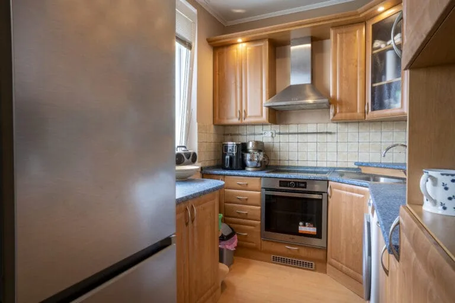
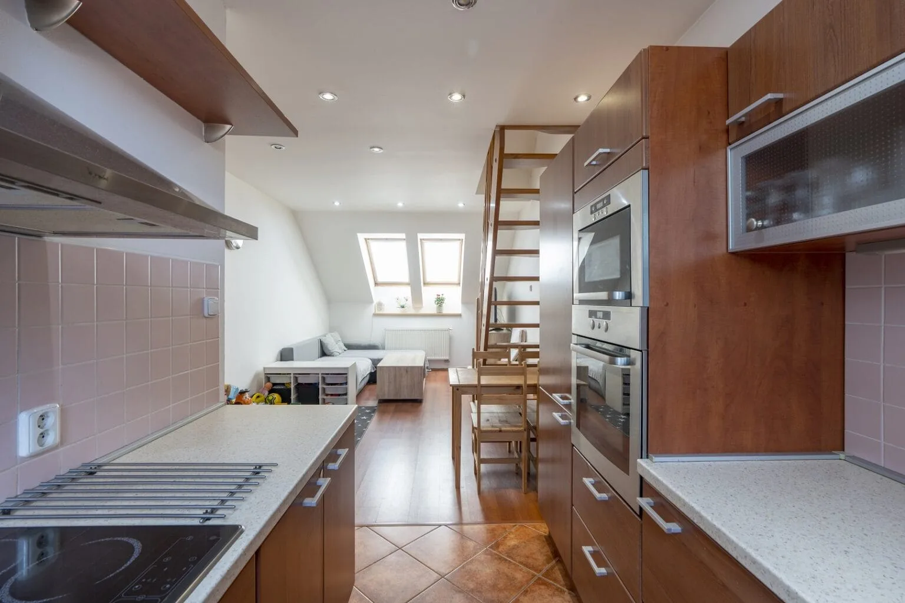
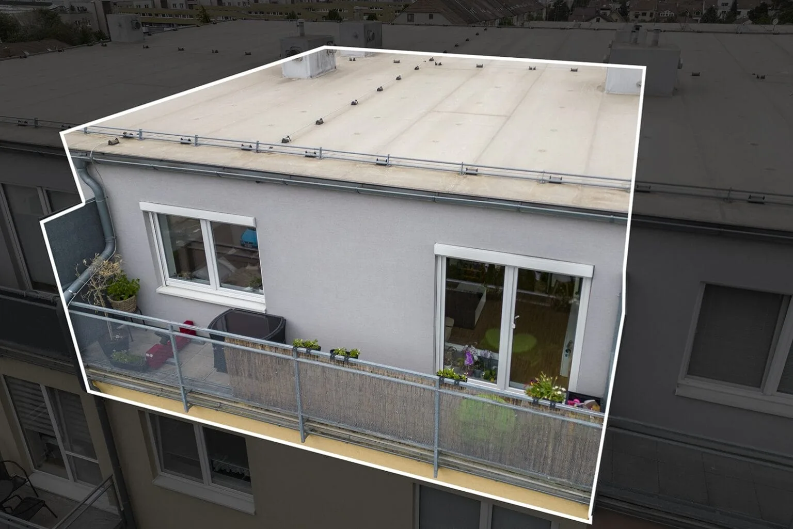

Kupující si dnes vybírají nemovitosti očima. Než si přečtou jediné slovo popisu, projedou fotky — a podle nich se během vteřiny rozhodnou, jestli kliknou dál, nebo scrollují pryč. Špatné fotografie dokážou potopit i skvělý byt. Dobré naopak přivedou víc zájemců, víc prohlídek a často i vyšší nabídky. Tady je návod, jak nemovitost nafotit tak, aby prodávala.
Proč jsou fotky to nejdůležitější
Inzerát s kvalitními fotkami získává mnohonásobně víc prokliků než stejný inzerát se snímky z mobilu pořízenými narychlo. A víc prokliků spouští řetězovou reakci: víc zhlédnutí → víc prohlídek → větší konkurence mezi zájemci → lepší cena pro vás. Fotky tedy nejsou kosmetika, ale přímo nástroj, který ovlivňuje výslednou cenu.

Příprava prostoru — základ, který rozhoduje
Nejlepší fotoaparát nezachrání nepřipravený prostor. Před focením důkladně ukliďte a odstraňte všechno, co odvádí pozornost: osobní fotky, magnetky a vzkazy z lednice, nabíječky, kabely, koše, hygienické potřeby v koupelně. Schovejte i drobné spotřebiče z kuchyňské linky, ať vynikne plocha.
Odstraňte přebytečný nábytek, aby prostor působil vzdušně a větší. Srovnejte polštáře a ručníky, stáhněte prkénko u záchodu, zatáhněte nebo naopak rozhrňte závěsy podle světla. Přidejte pár neutrálních detailů, které vytvoří útulnost — mísu s ovocem, květinu, srovnané knihy. Cílem je neutrální, ale obyvatelný prostor, do kterého se kupující snadno promítne.
Světlo je všechno
Světlo dělá z obyčejné fotky profesionální záběr. Foťte za denního světla, ideálně dopoledne nebo brzy odpoledne, kdy je světlo měkké. Vyhněte se protisvětlu — nefotьe proti oknu, ale tak, aby okno osvětlovalo místnost. Roztáhněte závěsy, vytáhněte rolety a pusťte dovnitř co nejvíc denního světla.
Rozsvíťte všechna světla v místnosti, ať nevznikají tmavé kouty, ale vypněte zdroje, které vrhají barevný nádech (například žluté nebo studené LED), protože míchání barevných teplot kazí výsledek. Vyhněte se focení večer s jediným stropním světlem — vznikají tmavé, neútulné a nažloutlé snímky, které nikoho nezaujmou.

Úhly, kompozice a vybavení
Foťte z rohu místnosti — zachytíte tak co nejvíc prostoru a místnost působí větší. Držte fotoaparát ve výšce zhruba prsou, ne nad hlavou ani od boku, a hlídejte rovné svislé linie (zárubně, hrany skříní, rohy stěn). Nakloněné nebo „padající" linie působí amatérsky. Každou místnost nafoťte z více úhlů a vyberte ten nejlepší záběr.
Co se vybavení týče: ideální je fotoaparát se širokoúhlým objektivem a stativ, který zajistí ostrost i za horšího světla. Moderní telefony s širokoúhlým režimem zvládnou hodně, ale pozor na zkreslení u krajů a na automatické „vylepšování", které dělá barvy nepřirozené. Stativ použijte i u telefonu — vyrovnané, ostré snímky poznáte na první pohled.
- Foťte z rohů místností pro maximální prostorový dojem
- Fotoaparát držte ve výšce prsou, svisle
- Hlídejte rovné linie — zárubně, hrany nábytku, rohy stěn
- Každou místnost nafoťte z více úhlů, vyberte nejlepší
- Používejte stativ — ostrost je zásadní
- Foťte ve formátu RAW (nebo nejvyšší kvalitě JPEG) pro editaci
Co posune prezentaci na vyšší úroveň
Statické fotky jsou základ, ale dnešní kupující ocení víc. Video prohlídka provede zájemce bytem v pohybu a dá mu lepší představu o dispozici. Letecké dronové záběry ukážou okolí, zahradu nebo polohu domu v rámci čtvrti. A interaktivní 3D prohlídka (například Matterport) umožní projít si nemovitost online jako ve hře — kupující se „projde" bytem ještě před návštěvou.
Tahle nadstavba přitahuje vážnější zájemce a zároveň šetří váš čas, protože na fyzickou prohlídku přijdou jen ti, kdo si nemovitost už prošli online a vědí, že je zajímá.

Závěr
Na fotkách se prodej nemovitosti buď rozjede, nebo zasekne. Věnujte přípravě prostoru a světlu pozornost, hlídejte úhly a u videa a 3D prohlídky zvažte profesionála. Investice do kvalitní prezentace se vrací na rychlosti prodeje i na výsledné ceně.
Jak celý prodej zvládnout krok za krokem se dočtete v kompletním návodu na prodej bez realitky. Jak byt připravit před focením i prohlídkami pomocí homestagingu popisujeme v článku o homestagingu.
Často kladené otázky
Profesionální fotky, video a 3D prohlídka za zlomek ceny provize
My v Bezmakléřích zajistíme kompletní vizuální prezentaci vaší nemovitosti — od fotek přes dron až po Matterport 3D prohlídku. Za jednorázový poplatek místo statisícové provize. Vy si odbavíte prohlídky, peníze z prodeje zůstanou vám.
Napište si o nezávaznou nabídku